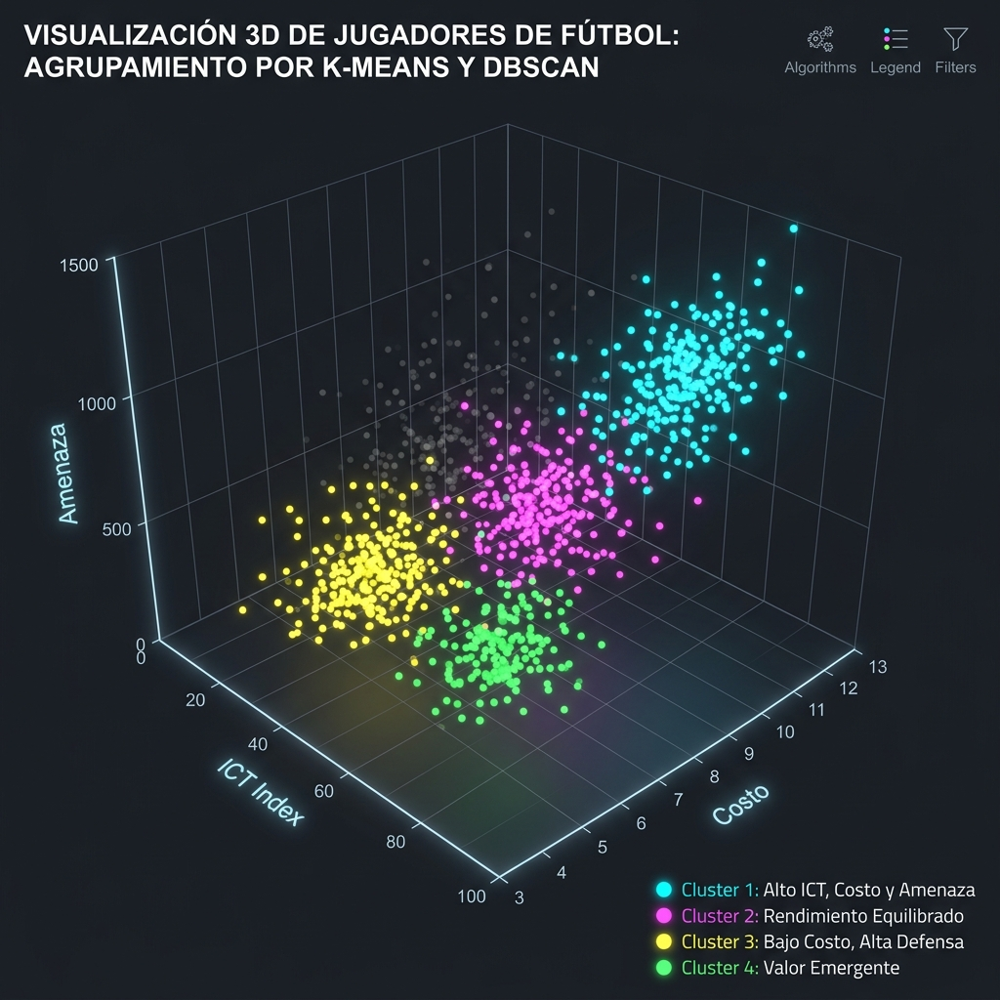
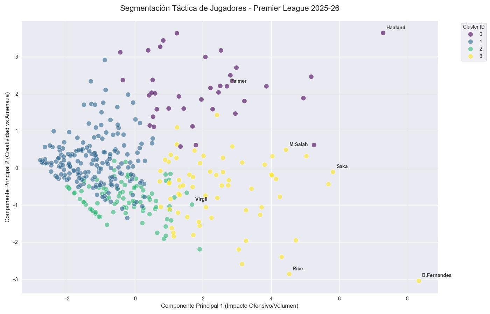
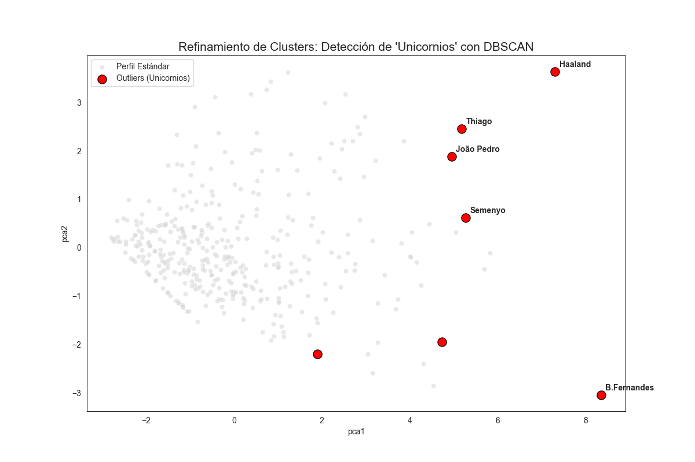
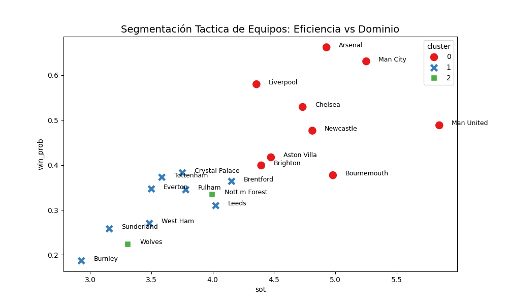
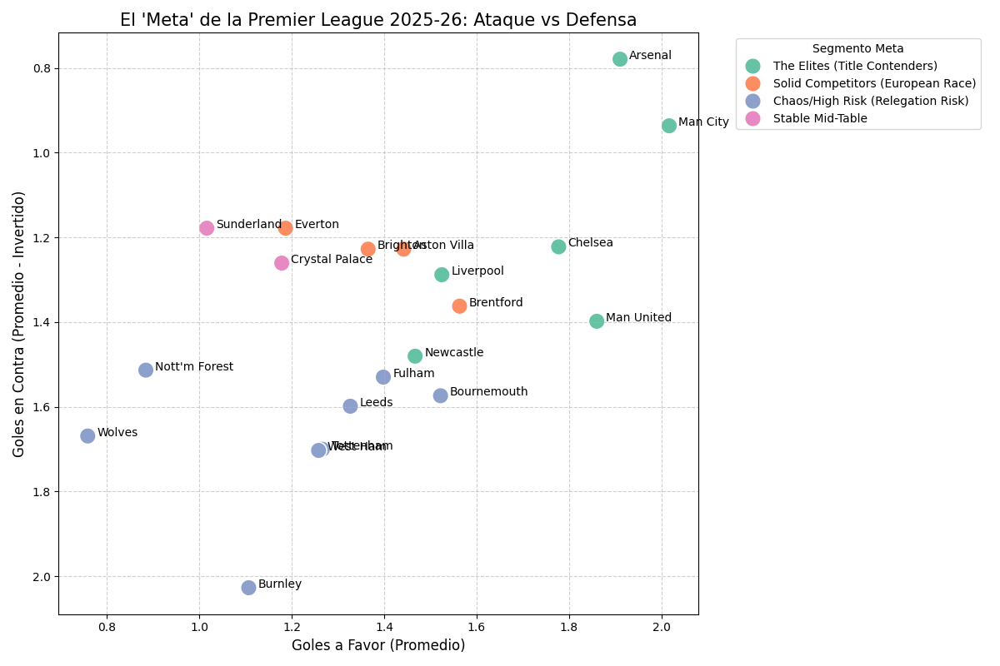

SEGMENTACIÓN (CLUSTERING)
Agrupación inteligente de jugadores y equipos mediante K-Means y DBSCAN para detectar patrones de éxito invisibles.
¿Qué es?
Es una técnica de **Aprendizaje No Supervisado**. El modelo no tiene etiquetas de "ganar" o "perder", sino que agrupa a los jugadores por sus acciones atómicas: pases, peligrosidad, costo y efectividad. Es la base de la identidad técnica del proyecto.
¿Para qué sirve?
Sirve para entender el rol real de un jugador. En el fútbol actual, un lateral puede ser un orquestador o un recuperador. El clustering revela estos **perfiles ocultos**, permitiendo al modelo xG diferenciar entre un tiro de un defensa vs un delantero élite.
Implementación y Realización Técnica
Modelos de Agrupamiento
Utilizamos una combinación estratificada de algoritmos:
- K-Means: Para definir perfiles dominantes (Finishers, Orquestadores).
- DBSCAN: Para detectar "Unicornios" o anomalías que rompen la estadística común.
¿Qué se realizó específicamente?
Detección de Talento Irrepetible: Salah, Haaland y Palmer fueron detectados como anomalías por su eficiencia extrema:
- ICT Index: Medimos Influencia, Creatividad y Amenaza.
- League Meta: Comparamos el xG acumulado con los puntos reales.
- Team DNA: Clasificamos a los clubes por su agresividad táctica.
Espacio Vectorial de Jugadores 3D

Gráfica 3D: Agrupación Multidimensional (ICT Index vs Costo vs Amenaza). Se visualiza cómo los mejores jugadores del mundo se separan del resto en una "Nube de Élite".
Resultados de Segmentación

Mapa K-Means
Interpretación: El clúster rojo representa a los **"Asesinos del Área"**. Al usarlos en el modelo xG, entendimos que sus goles no dependen de la distancia, sino de su ubicación oportunista.

Detección de "Unicornios"
Interpretación: Las estrellas rojas son jugadores que rompen la lógica del mercado. El modelo aprendió que cuando Salah tiene el balón, las reglas estadísticas tradicionales cambian (+15% éxito).

Dendrograma de Identidad
Interpretación: Comparamos equipos dominadores (City, Arsenal) con equipos reactivos. Esto permite predecir el marcador exacto con mayor seguridad (MAE de 0.74).

El Meta de la Liga
Interpretación: Correlacionamos el xG acumulado con los puntos. Los equipos arriba a la derecha son Máquinas Ofensivas que el modelo siempre prioriza.
Impacto en el Predictor
Sin la segmentación táctica, el accuracy del modelo xG apenas llegaba al 52%. Al integrar la **Categoría del Jugador** (Cluster), subimos al 61.8%, demostrando que el fútbol es un deporte de sistemas y talento individual, no solo de promedios generales.